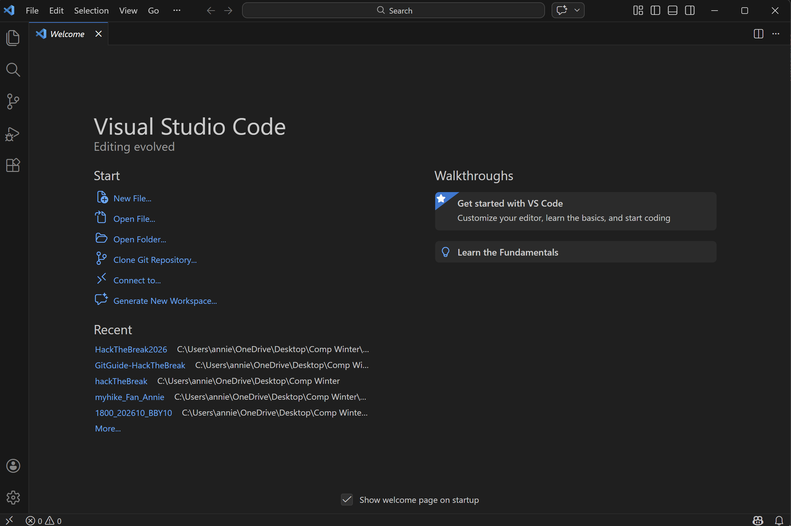
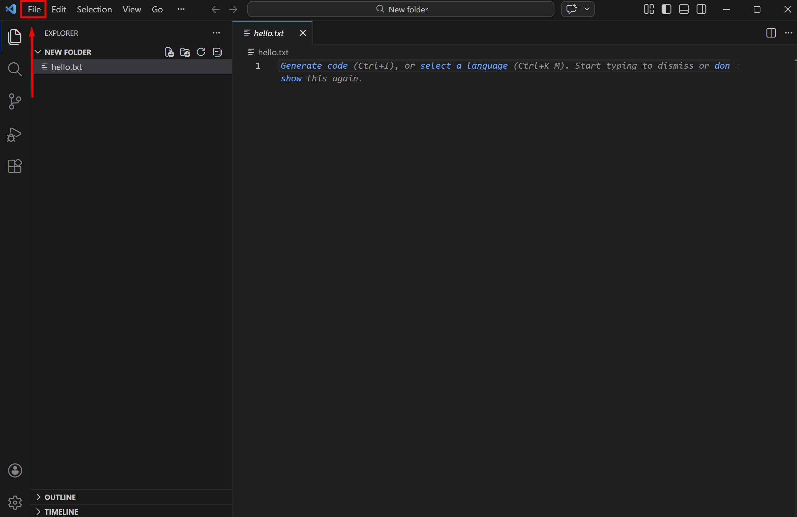
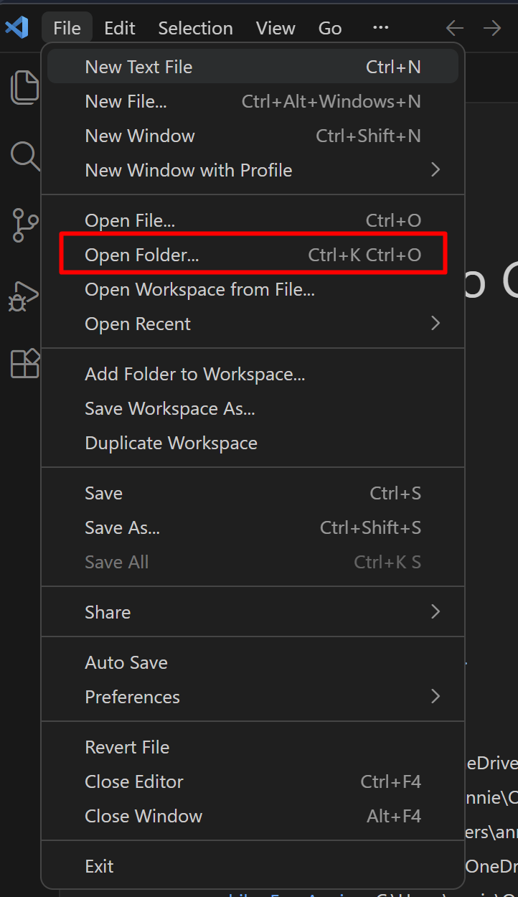
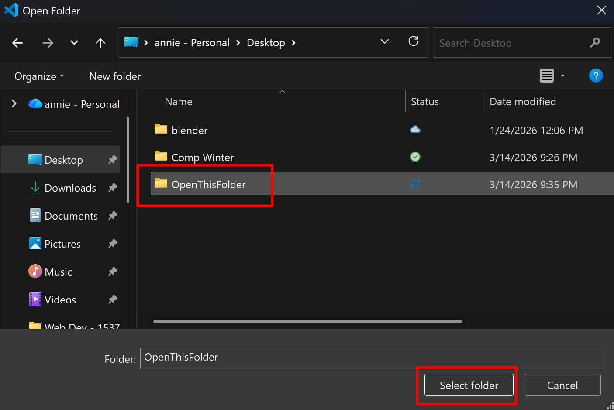

Step 1: Open VS Code
Launch your VS Code to get started.

Step 2: Click File
Navigate to the top left corner and find File

Click on Open Folder
Navigate to the folder you want and click select folder